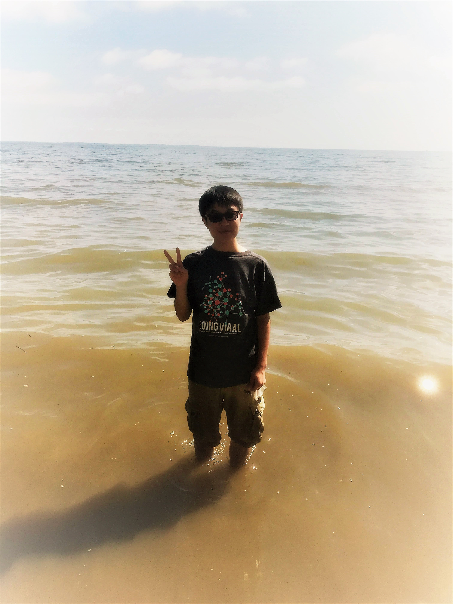

My name is Nathan Kwon, and I am currently a junior Information Science major.

My goal as an Information Science major is to become fluent in HTML/CSS, JavaScript, and other programming languages so that I could design my own websites.
AMP for INST126 (Fall 2019 - present)
I am currently working as an Academic Peer Mentor in the Academic Peer Mentoring Program at UMCP under the guidance of Professor Jean-Paul Togbe for INST126.
My responsibilities include:
- Assisting students during labs on Thursdays
- Holding office hours to further help students
- Communicating with Professor Togbe, the TA, and the other AMP to discuss ways to help students learn material
Research Volunteer (Summer 2019)
Over the summer, I worked under Dr. Byungseok Yoo and worked with 3D FDM printing to improve traditional casts/splints
My responsiblities included:
- Designing more efficient cast/splint designs using CAD software
- Developing design manuals
Sunday School Teacher (Fall 2018 - present)
I am currently a Sunday School Teacher at Global Mission Church, and have taught both 8th graders and 6th graders.
My responsibilities include:
- Effectively communicating the weekly topics to the students
- Coordinating with the pastor and the other teachers regarding youth group plans